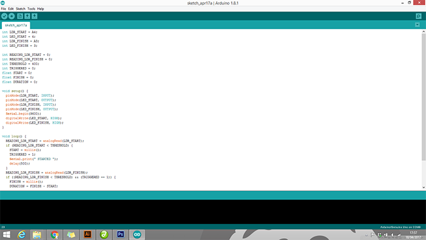
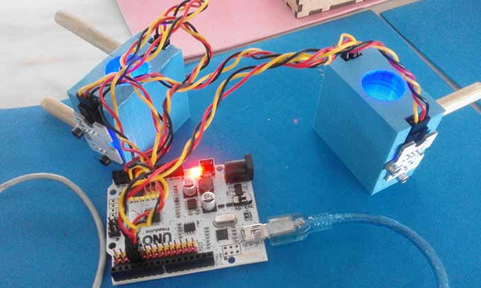
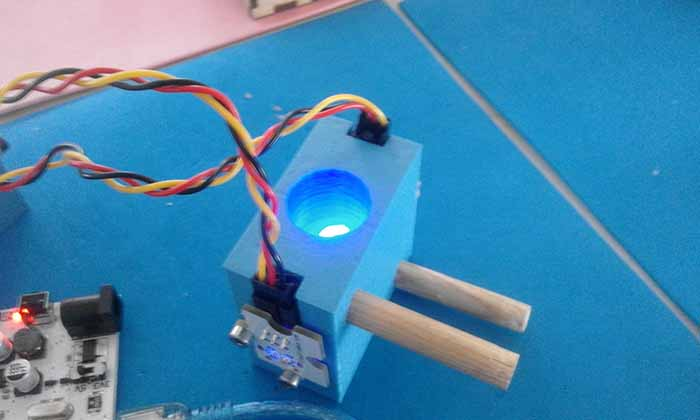
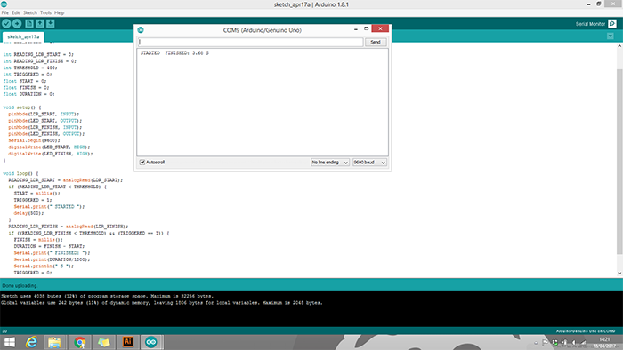
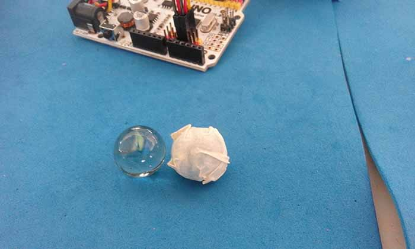
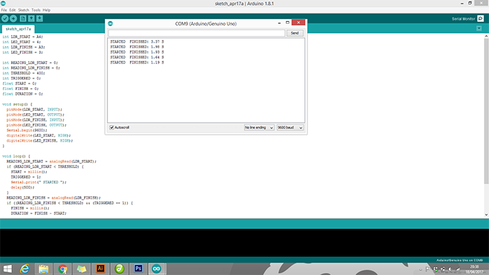

Week no. 11
Machine Design :
- automate your machine
Machine Design
This week’s assignment was to automate the passive parts of our machine.
My goal is to have a start and finish line for the circuit, and try to measure the
time the marble spends in
the circuit in a oled display or ring a bell on the finish line, or maybe both.
I start building my code in arduino:

My Code :
int LDR_START = A4;
int LED_START = 4;
int LDR_FINISH = A3;
int LED_FINISH = 3;
int READING_LDR_START = 0;
int READING_LDR_FINISH = 0;
int THRESHOLD = 400;
int TRIGGERED = 0;
float START = 0;
float FINISH = 0;
float DURATION = 0;
void setup() {
pinMode(LDR_START, INPUT);
pinMode(LED_START, OUTPUT);
pinMode(LDR_FINISH, INPUT);
pinMode(LED_FINISH, OUTPUT);
Serial.begin(9600);
digitalWrite(LED_START, HIGH);
digitalWrite(LED_FINISH, HIGH);
}
void loop() {
READING_LDR_START = analogRead(LDR_START);
if (READING_LDR_START < THRESHOLD) {
START = millis();
TRIGGERED = 1;
Serial.print(" STARTED ");
delay(500);
}
READING_LDR_FINISH = analogRead(LDR_FINISH);
if ((READING_LDR_FINISH < THRESHOLD) && (TRIGGERED == 1)) {
FINISH = millis();
DURATION = FINISH - START;
Serial.print(" FINISHED: ");
Serial.print(DURATION/1000);
Serial.println(" S ");
TRIGGERED = 0;
delay(500);
}
}
Testing the Code
To do this part i used some components from a BQ electronics kit.

in order to see if my program was working i set the reading only to the LDR from the start
and
i blocked the LED light with my finger to se the results and it was working!

Then i chaged the code back again and tried with the marble. It didn't work because our marbles
are translucent, so to fix that i coverd him with paper tape and tried again:

It's working :)

Adding a Buzzer/OLED display
......